Bu HTML sunum, `CREWAI sunum.md` ile ayni akisi takip eder. Konusmaci notlari ayri dosyada: `CREWAI sunum konusmaci notlari.md`.
Slayt 1
MULTIAGENT SYSTEMS
CrewAI ile Drone Flight Checklist App
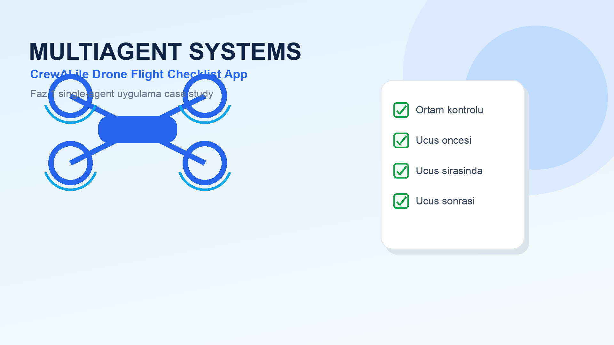
Slayt 2
Sunum Akisi
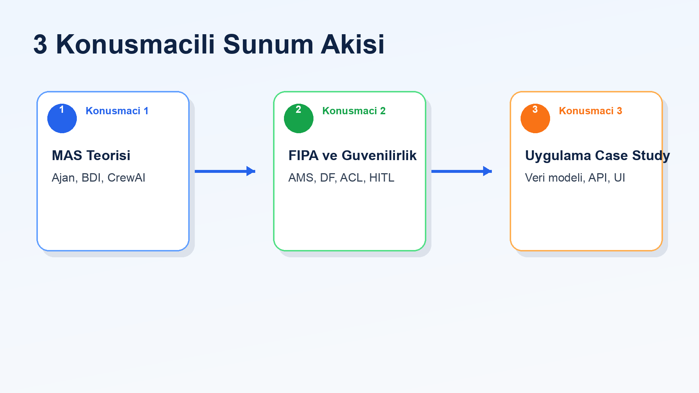
| Konusmaci | Bolum | Odak |
|---|
| 1 | MAS teorisi ve CrewAI | Ajan, BDI, process |
| 2 | FIPA ve guvenilirlik | AMS, DF, ACL, memory, HITL |
| 3 | Uygulama case study | Drone checklist app, veri modeli, API, sonuc |
Slayt 3
Konusmaci 1
MAS Teorisi ve CrewAI Mimarisi
- ajan kavrami
- BDI modeli
- CrewAI yapi taslari
- process yonetimi
Slayt 4
Ajan Kavrami
Wooldridge'e gore ajan, cevresiyle etkilesen ve hedef odakli davranan otonom bir yazilim birimidir.
- Ozerklik: kendi kararlarini verir
- Sosyal yetenek: diger ajanlarla iletisim kurabilir
- Reaktiflik: cevresel degisime tepki verir
- Proaktiflik: hedefe ulasmak icin inisiyatif alir
Slayt 5
BDI Modeli
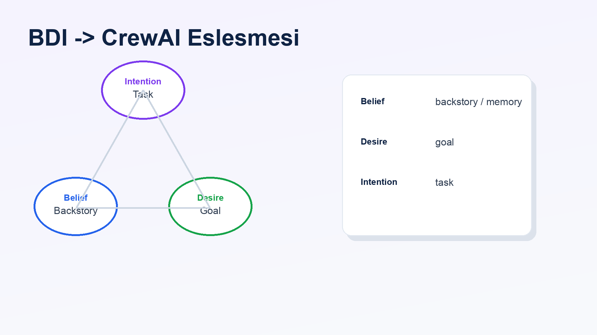
| BDI | Anlam | CrewAI karsiligi |
|---|
| Belief | Ajanin bildikleri | backstory, memory |
| Desire | Ulasilmak istenen hedef | goal |
| Intention | Secilen eylem plani | task |
Slayt 6
CrewAI Agent Ornegi
Agent(
role="Full-Stack Developer",
goal="Produce a runnable drone flight checklist app",
backstory="Pragmatic engineer who ships small usable products",
)
role: ajanin uzmanligigoal: uretilecek sonucbackstory: davranis tarzi ve baglam
Slayt 7
CrewAI Yapi Taslari
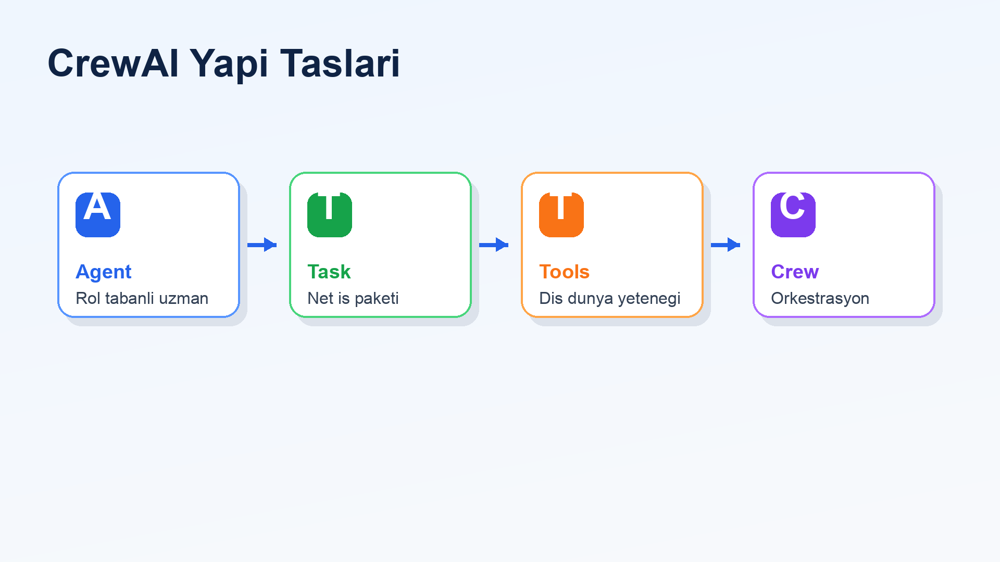
Agents: rol tabanli uzmanlarTasks: tanimli is paketleriTools: dis dunya ile temas noktasiCrew: agent ve task akisini yoneten orkestra
Slayt 8
Process Yonetimi
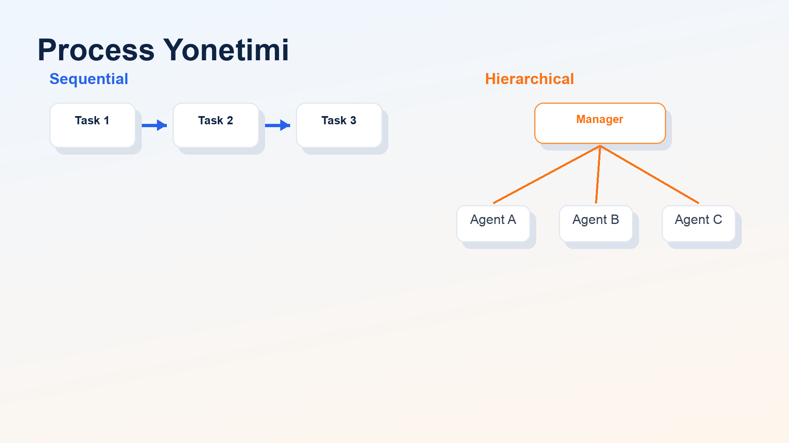
Sequential
- task'lar sirayla calisir
- Faz 1 icin kontrollu ve sade yontemdir
Hierarchical
- manager agent is dagitimi yapar
- daha esnek ama daha karmasiktir
Slayt 9
Konusmaci 2
FIPA, Hafiza ve Guvenilirlik
- FIPA standartlari
- AMS ve DF kavramlari
- FIPA ACL ve CrewAI context
- memory, retry ve human-in-the-loop
Slayt 10
FIPA Nedir?
FIPA, ajan sistemleri icin ortak standart ve kavramsal sozluk sunar.
- ajanlarin kimlik ve yasam dongusu
- ajan yeteneklerinin tanitimi
- ajanlar arasi mesajlasma
- hata ve basarisizlik durumlarinin ifade edilmesi
Slayt 11
FIPA -> CrewAI Karsiliklari
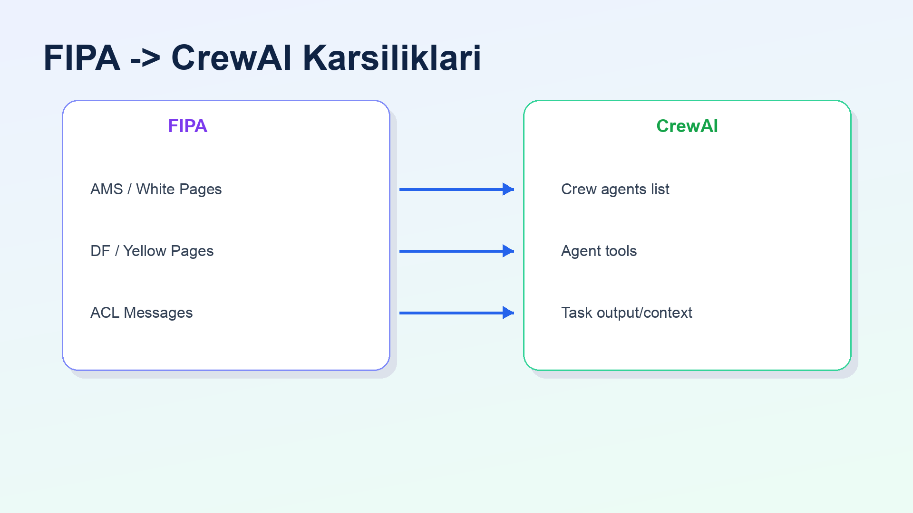
| FIPA kavrami | CrewAI karsiligi |
|---|
| AMS / White Pages | Crew(agents=[...]) |
| DF / Yellow Pages | Agent(tools=[...]) |
| ACL mesajlari | Task output ve context akisi |
Slayt 12
FIPA ACL ve CrewAI Context
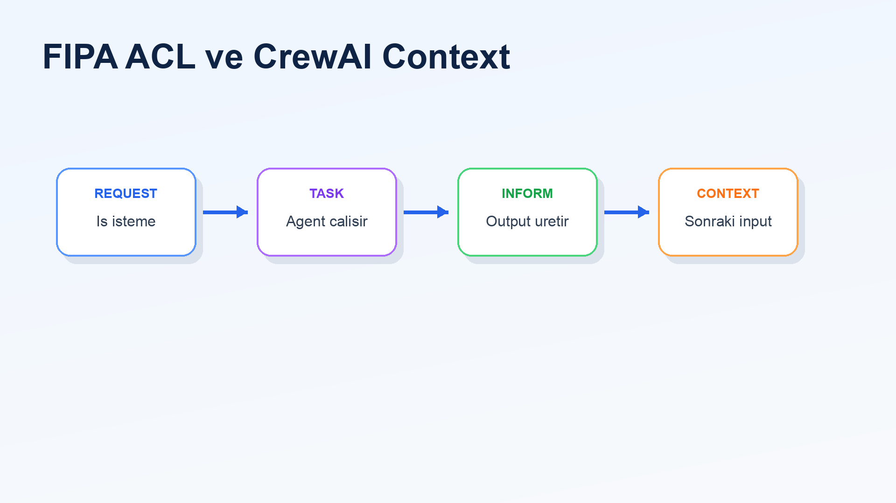
REQUEST: bir is istemeINFORM: bilgi aktarmaREFUSE: isi yapamamaFAILURE: basarisiz deneme
Slayt 13
Memory Sistemleri
Short-term memory
- gorev sirasindaki baglami korur
- o oturumdaki bilgileri kullanir
Long-term memory
- onceki deneyimlerden yararlanmayi hedefler
- RAG ve vector database ile iliskilidir
Crew(memory=True)
Slayt 14
Retry ve Human-in-the-Loop
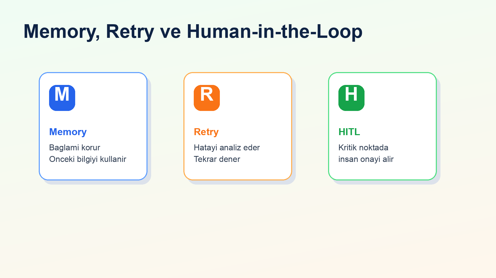
Agent(max_retry_limit=3)
Task(human_input=True)
Slayt 15
Konusmaci 3
Uygulama Case Study
- mevcut uygulama mimarisi
- drone checklist urun akisi
- session bazli veri modeli
- API ve UI kararlari
- Faz 1 sonucu ve sonraki adim
Slayt 16
Faz 1 Uygulama Mimarisi
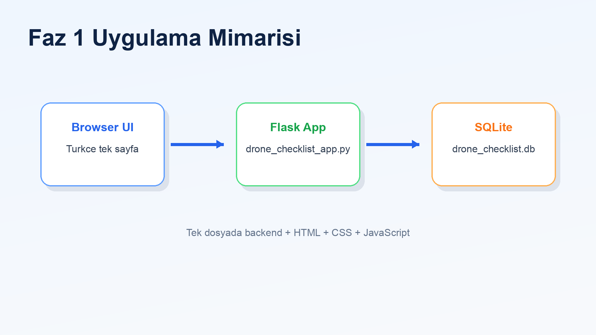
drone_checklist_app.py- Flask backend
- SQLite persistence
- inline HTML/CSS/JavaScript UI
Slayt 17
Drone Checklist Urun Akisi
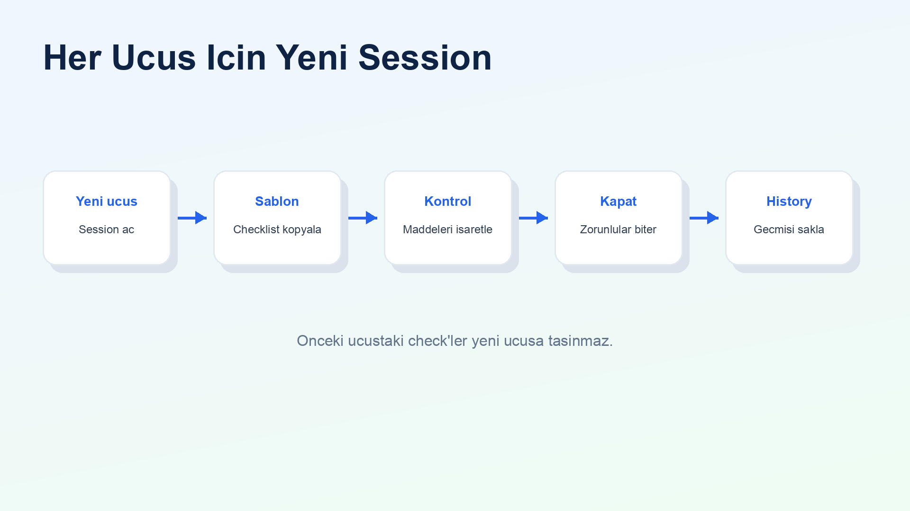
- Kullanici yeni ucus baslatir
- Sistem checklist sablonunu oturuma kopyalar
- Kullanici faz bazli maddeleri tamamlar
- Acil durum prosedurlerini referans panelinden okur
- Ucus kapatilir ve history saklanir
Slayt 18
Checklist Fazlari
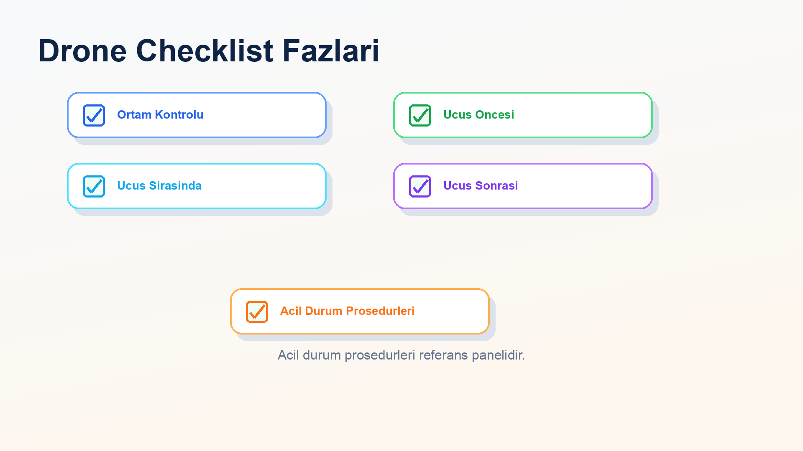
Acil durum prosedurleri normal checkbox listesi degil, referans panelidir.
Slayt 19
Veri Modeli
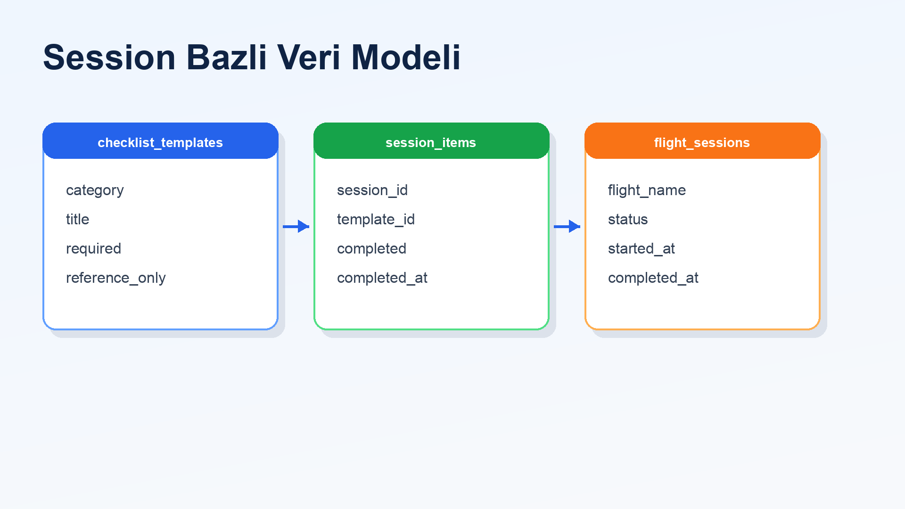
| Tablo | Gorev |
|---|
checklist_templates | Standart checklist maddelerini saklar |
flight_sessions | Her ucus icin oturum kaydi tutar |
session_items | O ucusa ait tamamlanma durumunu saklar |
Slayt 20
Session Mantigi
- her ucus ayri takip edilir
- tamamlanma durumu ucusa ozel olur
- gecmis ucuslar korunur
- zorunlu maddeler tamamlanmadan ucus kapatilamaz
Checklist her ucus icin temiz baslamalidir.
Slayt 21
API Akisi
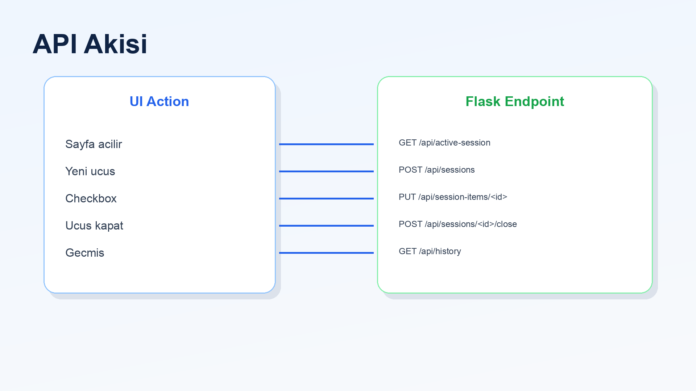
GET /api/active-sessionPOST /api/sessionsPUT /api/session-items/<id>POST /api/sessions/<id>/closeGET /api/history
Slayt 22
Basit Turkce UI
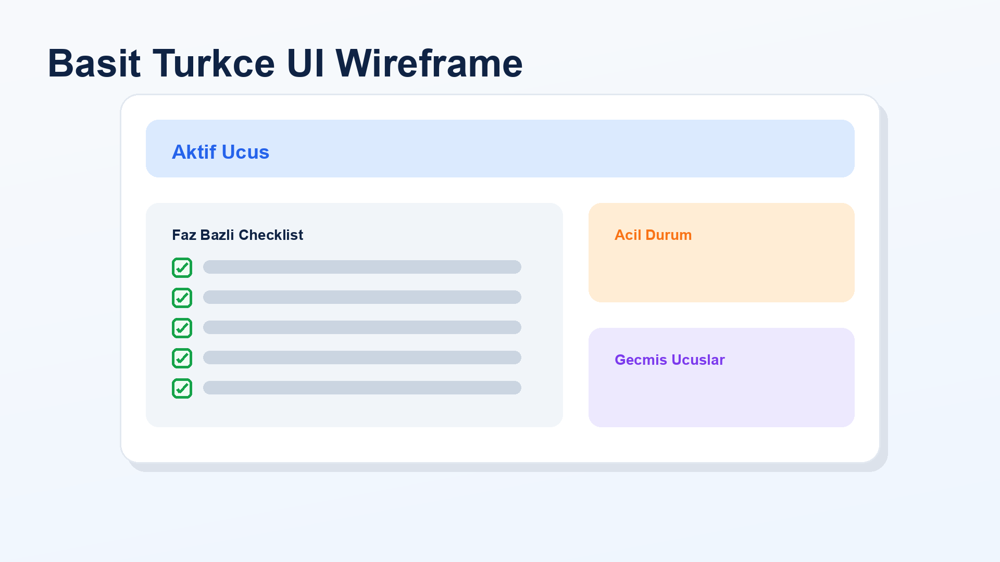
- aktif ucus karti
- yeni ucus baslatma formu
- faz bazli checklist bolumleri
- acil durum referans paneli
- gecmis ucuslar listesi
Slayt 23
Dogrulama
- Python compile kontrolu
- Flask API smoke test
- yeni session olusturma
- checklist maddesi guncelleme
- zorunlu maddeler bitmeden ucus kapatma engeli
- history endpoint kontrolu
Not: uv run bu makinede onnxruntime platform uyumsuzlugu nedeniyle takildi.
Slayt 24
Faz 1 Ciktilari
drone_checklist_app.pydrone_checklist.dbPHASE1_DRONE_CHECKLIST_PLAN.mdREADME.mdCREWAI sunum.mdCREWAI sunum.htmlCREWAI sunum konusmaci notlari.mdassets/ altindaki PNG gorselleri
Slayt 25
Sonraki Adim
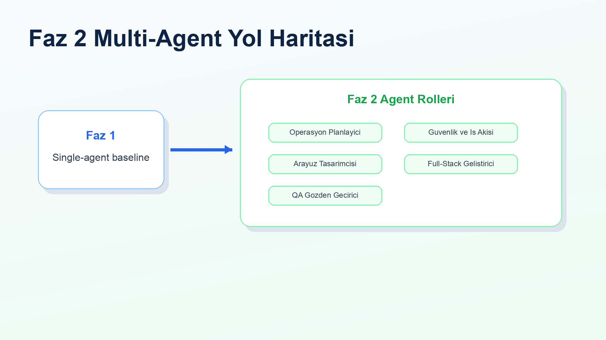
- Operasyon Planlayici
- Guvenlik ve Is Akisi Tasarimcisi
- Arayuz Tasarimcisi
- Full-Stack Gelistirici
- QA Gozden Gecirici
Slayt 26
Kapanis
- MAS teorisi CrewAI kavramlariyla eslestirildi
- FIPA standartlari pratik agent/task yapisina baglandi
- single-agent Faz 1 uygulamasi olusturuldu
- drone checklist icin session bazli veri modeli kuruldu
- sonraki multi-agent faz icin referans cikti hazirlandi
Slayt 27
Referanslar
- Wooldridge, M. An Introduction to MultiAgent Systems
- FIPA standartlari:
http://www.fipa.org/ - CrewAI dokumantasyonu:
https://docs.crewai.com/ - Proje repository'si: yerel CrewAI uygulama repository'si